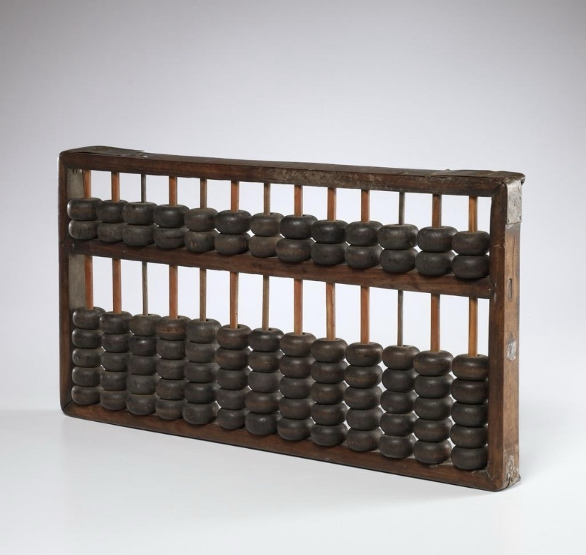
2700 a.C. — Ábaco
Um dos primeiros instrumentos de cálculo. Utilizava contas que eram movimentadas para
representar números e realizar operações matemáticas.
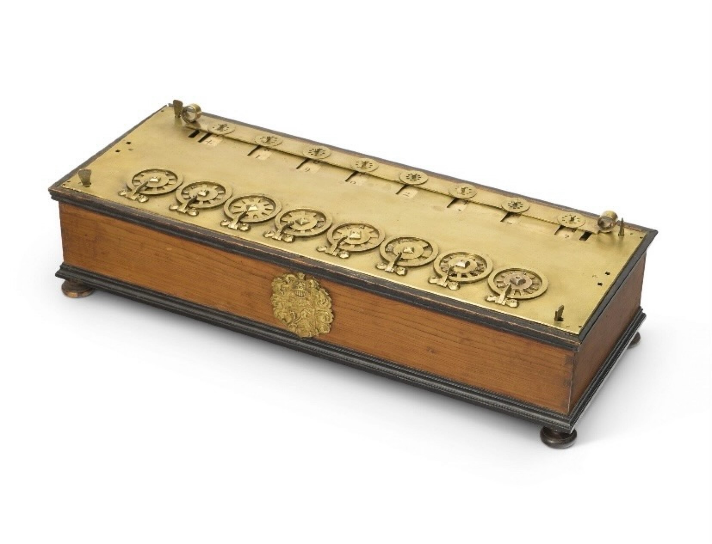
1642 — Pascalina
Calculadora mecânica que realizava operações de adição e subtração por meio de engrenagens.
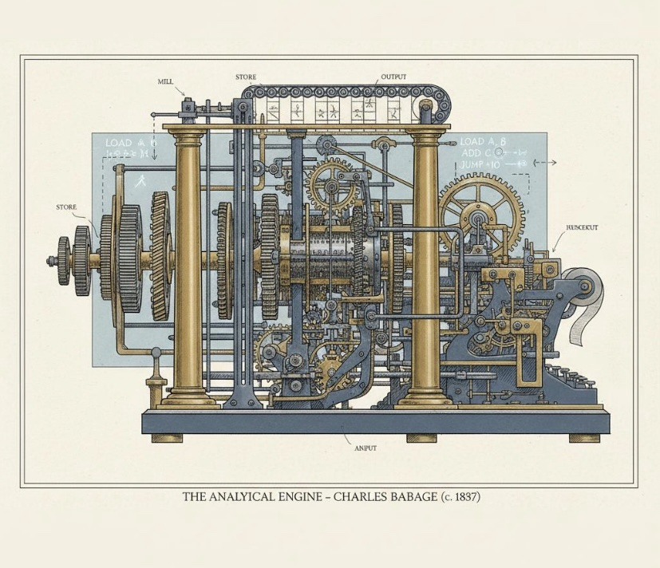
1837 — Máquina Analítica
Projeto de uma máquina programável que previa operações de cálculo e armazenamento de dados.
É considerada um importante precursor dos computadores.
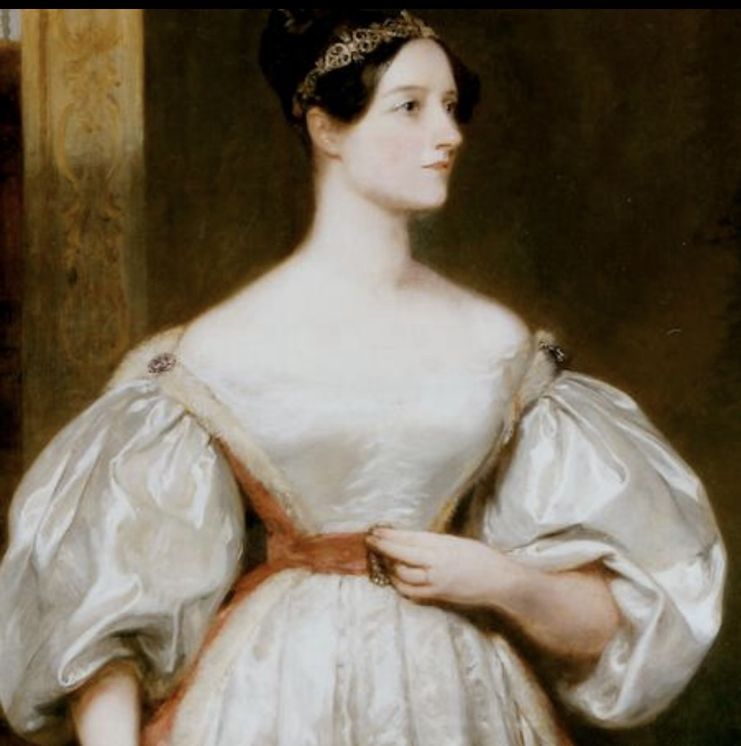
1843 — Ada Lovelace
Publicou um algoritmo destinado à Máquina Analítica, sendo reconhecida como pioneira da
programação de computadores.
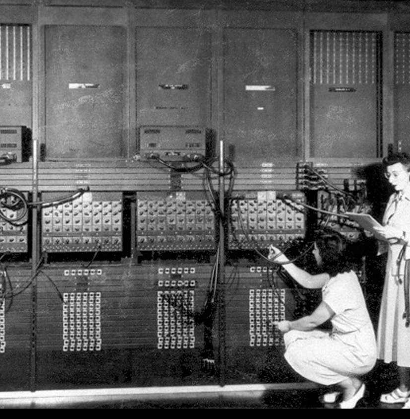
1946 — ENIAC
Um dos primeiros computadores eletrônicos de uso geral. Ocupava uma sala inteira e utilizava
milhares de válvulas eletrônicas.
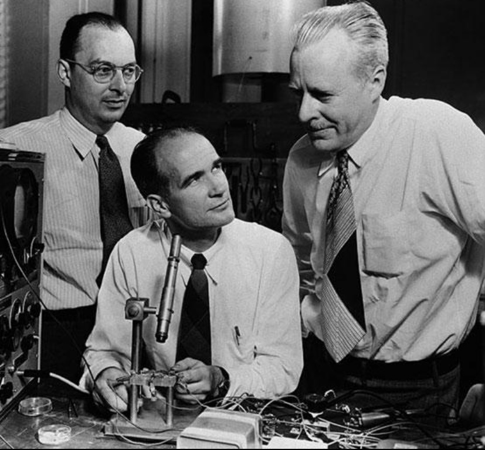
1947 — Transistor
O desenvolvimento do transistor possibilitou computadores menores, mais eficientes e que
consumiam menos energia do que os que utilizavam válvulas.
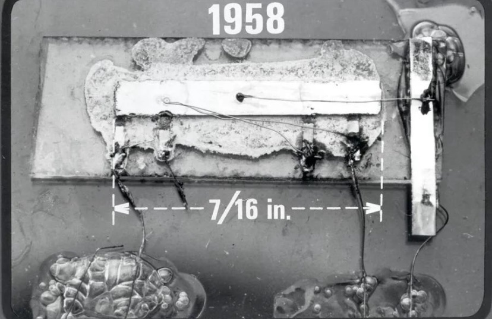
1958 — Circuito integrado
A integração de componentes eletrônicos em um mesmo dispositivo ajudou a reduzir o tamanho
dos equipamentos e ampliar sua capacidade.
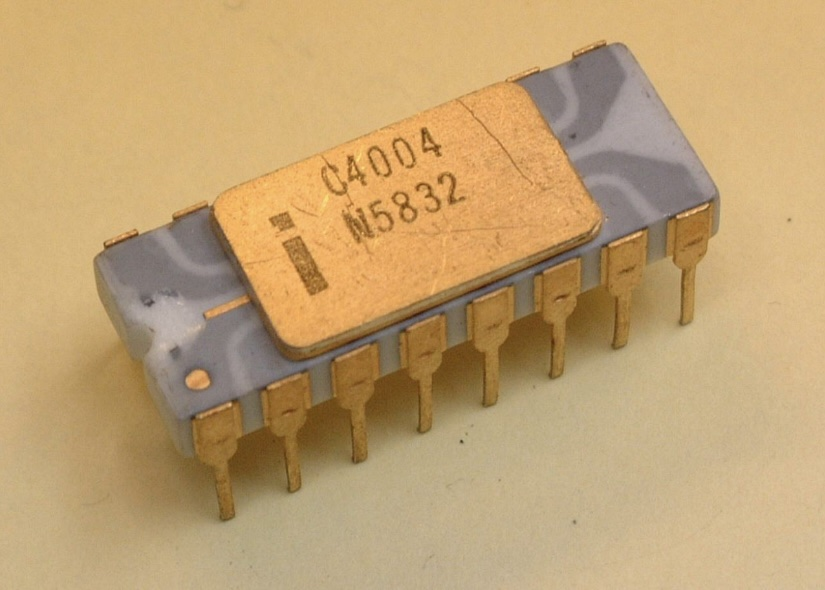
1971 — Microprocessador
O Intel 4004 reuniu as funções de processamento central em um único chip, contribuindo para
o desenvolvimento de computadores menores.
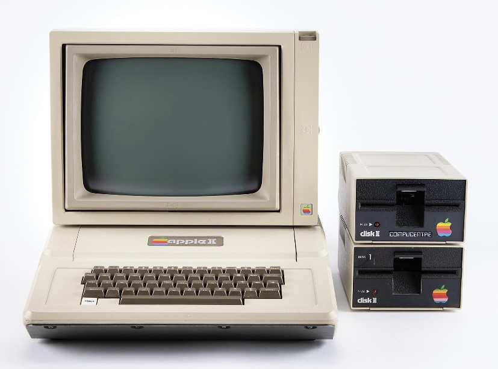
Década de 1970 — Computadores pessoais
Equipamentos como o Apple II ajudaram a levar os computadores para residências, escolas e
pequenos negócios.
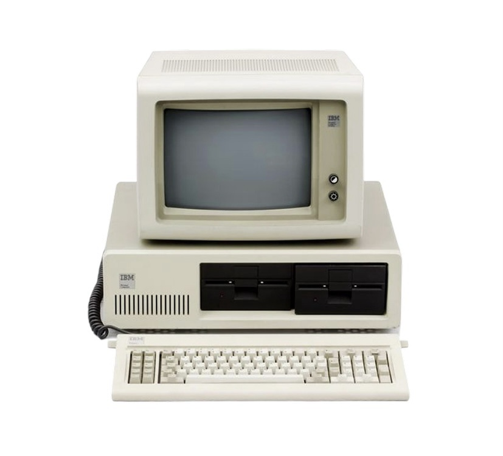
1981 — IBM PC
O lançamento do IBM PC fortaleceu o mercado de computadores pessoais e ajudou a consolidar
esse tipo de equipamento nas empresas e nos lares.
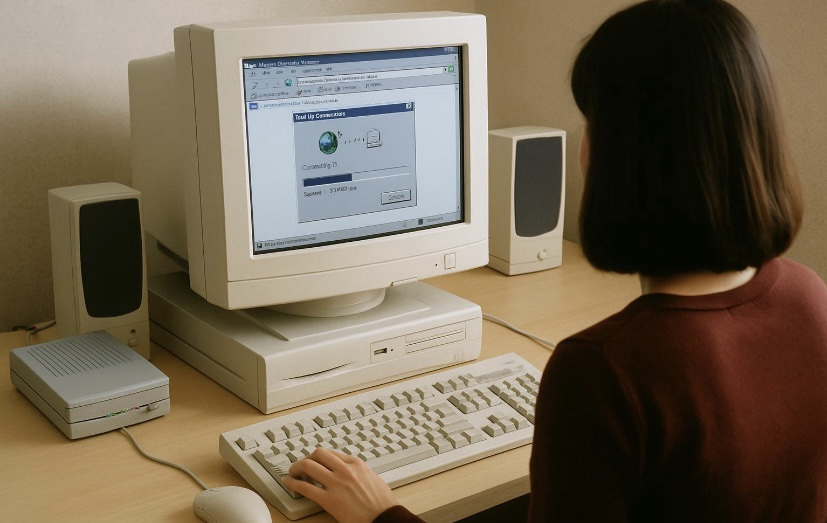
Anos 2000 — Notebooks e mobilidade
Os notebooks se tornaram mais comuns, permitindo trabalhar, estudar e acessar informações
fora de casa ou do escritório.
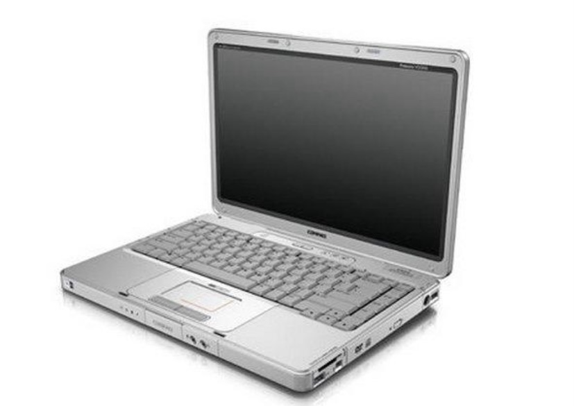
2007 — Expansão dos smartphones
O lançamento do iPhone ajudou a popularizar uma nova forma de interação com dispositivos
móveis, combinando comunicação, internet e aplicativos.
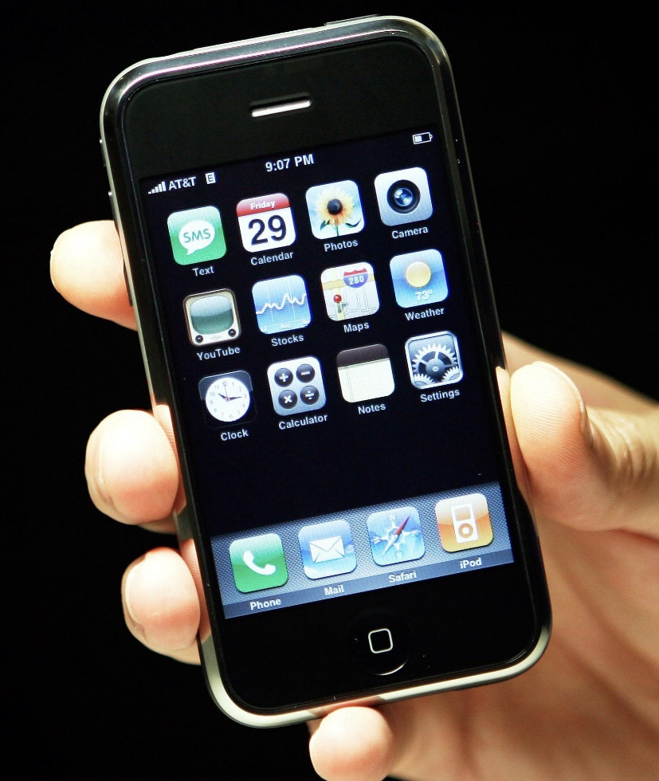
Década de 2010 — Inteligência artificial
Avanços em aprendizado de máquina, grandes volumes de dados e computação em nuvem ampliaram
as aplicações da inteligência artificial.
Anos 2000 — Notebooks e mobilidade
Os notebooks se tornaram mais comuns, permitindo trabalhar, estudar e acessar informações
fora de casa ou do escritório.
2020–2026 — IA generativa e novas tecnologias
Ferramentas capazes de gerar textos, imagens, sons e códigos se popularizaram. Também
avançam as pesquisas em computação quântica, robótica e sistemas inteligentes.